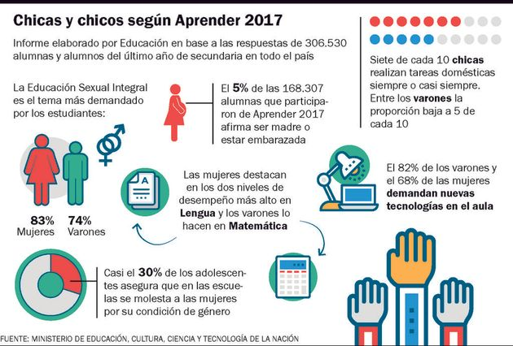

E.S.I

Ya pasaron casi doce años de la sanción de la ley 26.510. Fue el 4 de octubre de 2006 cuando se dejó asentado que "todos los educandos tienen derecho a recibir educación sexual integral en los establecimientos educativos de gestión estatal y privada". Además de educar sobre sexualidad, la ley se proponía romper los estereotipos de género, fomentar el cuidado del cuerpo propio y el ajeno, promover actitudes responsables y el respeto por la diversidad sexual.
Los años pasaron y la sensación fue siempre la misma: que la ley no se se estaba aplicando. Desde 2017 se empezó a relevar en forma más concreta y la presunción quedó confirmada. Tanto que en el cuestionario complementario de las pruebas Aprender, cuando se preguntó por temas que la escuela debería abordar pero no lo hace, el 79% de los estudiantes de secundaria dijo que falta educación sexual y el 76% que falta abordaje sobre violencia de género.
"Aún no se ven avances si bien se habla del tema y se reconoce la necesidad. Los ministerios provinciales no empujaron su aplicación y desde Nación tampoco. El abordaje debe ser integral con los materiales y el currículum que elaboró el Ministerio de Educación nacional (MEN). Los docentes deben capacitarse y tener personal especializado de consulta", le dijo a Infobae Mabel Bianco, presidenta de la Fundación para Estudio e Investigación de la Mujer (FEIM).
Datos tomados en la campaña Aprender 2017.
La Fundación Huésped comenzó a indagar en la aplicación de la ley. Consultó a docentes y estudiantes y la evidencia fue contundente. Solo la mitad de los maestros encuestados asegura haber recibido capacitaciones. El 86% dice que la incorpora a sus clases, pero 4 de cada 10 relacionan a ESI solo con genitalidad, cuando la ley es vasta. La mirada de los alumnos, en tanto, es todavía más preocupante: solo la mitad conoce la existencia de la ley y la gran mayoría la vincula con aprender sobre "el aparato reproductor".
En el contexto nacional, la Ciudad de Buenos Aires parece estar un paso adelante en términos de aplicación de la ley. "No se puede decir que no trabajamos en ESI en la Ciudad. Hoy 9 de cada 10 alumnos sostiene que tuvo al menos un abordaje de lo que marca la ley. Sucede que muchas veces se la relaciona solo con la genitalidad, pero cuando vas puntualizando en cada tema se dan cuenta de que recibieron contenidos", le dijo Soledad Acuña, ministra de educación porteña, a Infobae.
La necesidad clara está: se necesita instalar el debate y brindar herramientas. Sonia Almada, directora del Centro Aralma, especializado en infancia y adolescencia, piensa que "es difícil transmitir lo que no creés y, más aún, aquello a lo que te oponés", pero dice: "Junto a todos los protagonistas del sistema, podrían propiciar las herramientas a chicos y chicas. Desde allí, compartiendo experiencias se podría construir entre todos nuevas miradas, en la que la docencia no quede separada de la vida cotidiana. La ley de educación sexual integral nos enfrenta a pensar en el otro desde la empatía, jamás desde la imposición del 'deber ser y hacer'"
Source: InfoBae
Más noticias
Coronavirus

La pandemia que esta alocando al mundo entero, el COVID-19. Haz click aquí para más información.
Dengue
Dengue, el virus olvidado. Haz click aquí para más información.
Cambios Climaticos